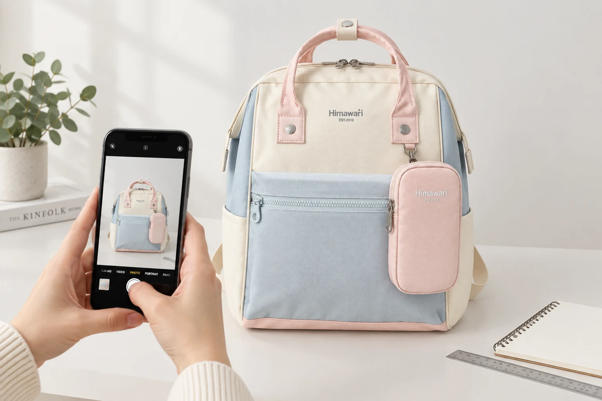

백팩 수선 문의 전 준비할 사진: 전체·위치·가까이 3장

가방에 문제가 생겼을 때 손상 부위만 아주 크게 찍으면 상담하는 사람이 어느 위치인지 알아보기 어려울 수 있습니다. 반대로 전체 사진 한 장에는 작은 벌어짐이나 끼임이 잘 보이지 않습니다. 수선을 직접 시도하는 방법이 아니라, 현재 상태를 정확히 전달하기 위한 사진과 메모를 준비해 보세요.
1. 조작하기 전에 발견한 상태를 남기세요
실이 풀리거나 지퍼가 멈췄다면 무리하게 당기거나 임의로 자르기 전에 사진을 찍습니다. 고장 원인을 단정하지 말고 보이는 상태만 기록하세요. 내용물의 무게가 손상 부위를 당기고 있다면 물건을 조심스럽게 꺼내 평평한 곳에 놓습니다. 촬영을 위해 손상 부위를 더 벌리지는 않습니다.
2. 첫 사진은 제품 전체가 보이게 찍으세요
정면이나 문제가 있는 쪽의 전체 모습에 손잡이와 바닥까지 담습니다. 모델명과 색상을 함께 적으면 비슷한 제품을 구분하는 데 도움이 됩니다. 대표 이미지는 정상 제품의 예시이며 실제 손상을 나타낸 사진은 아닙니다. 제품을 식별하는 자료와 증상을 보여주는 사진은 역할이 다릅니다.
3. 두 번째 사진은 주변 구조까지 담으세요
앞 포켓, 어깨끈 연결부, 바닥 모서리처럼 위치를 알아볼 수 있도록 주변 봉제선이나 지퍼도 함께 찍습니다. 손가락으로 가리키느라 손상 부위를 가리지 않게 하고, 설명에 ‘앞면 기준 오른쪽 아래’처럼 기준 방향을 적으세요. 전체 사진과 같은 방향으로 촬영하면 두 사진을 대조하기 쉽습니다.
4. 세 번째 사진은 초점과 밝기를 확인하세요
가까이 찍을 때는 카메라가 초점을 잡을 수 있을 만큼 거리를 둡니다. 화면에서 사진을 확대해 실이나 지퍼 부분이 흐리지 않은지 확인하세요. 필터와 보정으로 색을 바꾸지 말고, 창가의 간접 빛 등 반사가 적은 환경을 활용합니다. 크기 설명이 필요하면 자를 옆에 놓되 손상 부위를 누르거나 안쪽에 밀어 넣지 마세요.
5. 증상은 짧은 사실과 함께 보내세요
구매처, 모델명, 구매 시점과 함께 언제 처음 발견했는지 적습니다. ‘지퍼를 닫으면 중간이 다시 벌어집니다’처럼 관찰한 현상과 이전에 시도한 조치를 구분하면 좋습니다. 사진에 주소·연락처·카드 정보가 보이지 않도록 확인하고, 주문 정보는 공개 게시물이 아닌 비공개 문의에 전달하세요. 수선 가능 여부·비용·기간은 상담 결과를 확인한 뒤 결정합니다.
참고·안내
- Himawari 실제 제품 정보
- 사용 환경과 제품 구조에 따라 적용 방법이 다릅니다. 제품 안내와 장소별 이용 수칙을 우선하세요.
- 대표 이미지는 Himawari No.1027 제품 이미지를 참조한 AI 연출 이미지이며, 실제 손상이나 수선 결과를 보여주는 사진이 아닙니다.
자주 묻는 질문
사진 3장만으로 수선 여부가 확정되나요?
아닙니다. 사진은 상태를 전달하는 자료입니다. 추가 사진이나 실물 확인이 필요할 수 있으며 수선 가능 여부와 비용은 담당자의 안내를 받아야 합니다.
지퍼가 움직이는 모습을 영상으로 보내야 하나요?
먼저 접수 채널에서 허용하는 첨부 형식을 확인하세요. 움직임을 보여주려고 무리하게 반복 조작하지 말고, 사진과 증상 설명으로 먼저 문의해도 됩니다.